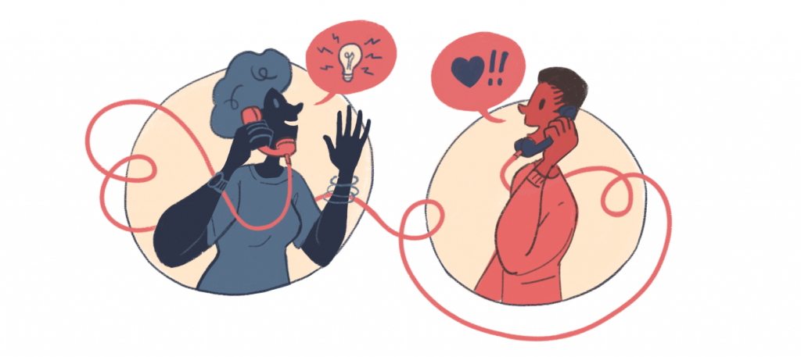

Budite aktivni i ažurni

Ukoliko imate nalog na nekoj društvenoj mreži, ali je od vaše poslednje aktivnosti prošlo nekoliko meseci, to vam neće puno značiti.
Morate biti u toku s događajima, pratiti razvoj oblasti kojom se bavite, prikupljati novitete, aktivno se povezivati s kupcima i kolegama.

Ako neku mrežu ne koristite kao nekad, najbolje je da je ugasite i posvetite se drugim mrežama.
Odredite ciljno tržište
Privucite klijente sadržajem
Objavljujte kvalitetan i privlačan sadržaj.
Trudite se da uvek objavite popuste i novitete. Omugućite check-in opciju ukoliko reklamirate restoran, kafić i slično.

Pronađite odgovarajuću publiku i fokusirajte se na ciljane grupe. Detaljne informacije možete pronaći ovde.
Koristite različite mreže
Naravno, ovo ne znači da morate imati profil na svim društvenim mrežama, ali je poželjno da privučete korisnike bar na nekima.
Društvenu mrežu za plasiranje svog proizvoda izabraćete na osnovu ciljane publike.

Poželjno je da imate različiti pristup na različitim društvenim mrežama.
Osluškujte svoje klijente
Koristite video snimke
Video marketing je u poslednjih par godina doživeo procvat. Ovaj vid promovisanja biznisa može da osveži vaš profil.
Video ne treba da bude predug, optimalna dužina je od 30 do 90 sekundi, u zavisnosti od društvene mreže.

Sav materijal treba da bude visoke rezolucije i kvalitetnog sadržaja.